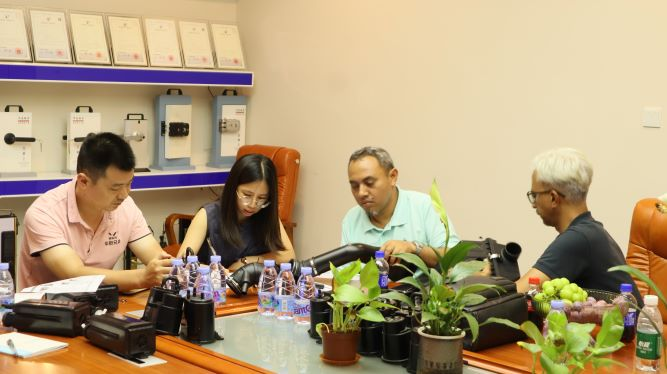

A WAFU e o principal distribuidor de produtos de segurança de Portugal assinaram oficialmente um acordo exclusivo de distribuição nacional. Com este acordo, todo o portefólio WAFU — fechaduras remotas residenciais, fechaduras inteligentes, fechaduras invisíveis, fechaduras eletrónicas, entre outras — entra formalmente no mercado português, irradiando a partir daí para o sudoeste da Europa e marcando um passo estratégico importante na expansão europeia da marca.

1. Importância estratégica do mercado português
- Vantagem geográfica: Portugal situa‑se no extremo sudoeste da Europa, um ponto estratégico que liga Europa, África e Américas.
- Turismo e imobiliário em expansão: como destino turístico de topo, o mercado de arrendamento de curta duração cresce rapidamente, aumentando a procura por soluções de segurança inteligente.
- Apoio governamental: o governo português promove ativamente a construção de cidades inteligentes, criando um ambiente favorável para produtos smart‑home.
2. Adaptação e inovação localizadas
Para responder às necessidades específicas de Portugal, a WAFU implementou várias otimizações:
- Adaptação climática: reforço da proteção contra humidade e névoa salina, adequando‑se ao clima costeiro atlântico.
- Compatibilidade com tipos de portas: desenvolvimento de soluções de instalação para portas de madeira maciça e portas compósitas modernas, comuns em Portugal.
- Suporte multilíngue: inclusão de interface e comandos de voz em português para melhorar a experiência do utilizador.
3. Certificações e garantia de qualidade
Os produtos WAFU obtiveram certificações internacionais de elevada autoridade:
- União Europeia: CE, RoHS, REACH, classificação EN 15684 de resistência a arrombamento
- Qualidade: certificação ISO 9001 do sistema de gestão da qualidade
- Desempenho: MTBF ≥ 100.000 ciclos, muito acima do padrão da indústria
Atualmente, os produtos WAFU são exportados para 62 países e já conquistaram forte reputação no mercado europeu.
4. Modelo de cooperação e apoio ao mercado
A WAFU fornecerá ao distribuidor nacional português um pacote completo de suporte:
- Logística otimizada: centro de armazém regional em Lisboa para garantir entregas rápidas
- Fundo de marketing: orçamento para promoção de mercado e materiais de comunicação da marca
- Sistema de formação: formação técnica e de conhecimento de produto para a equipa do distribuidor
- Serviço pós‑venda: construção de uma rede local de assistência para suporte rápido
5. Perspetivas futuras
Tendo o mercado português como ponto de partida, a WAFU planeia aprofundar a sua presença no sudoeste da Europa nos próximos três anos e expandir gradualmente para países lusófonos como Brasil e Angola. A empresa continuará a aumentar o investimento em I&D, lançar produtos mais adaptados às necessidades locais e reforçar ainda mais a influência global da “fabricação inteligente da China” no setor da segurança.